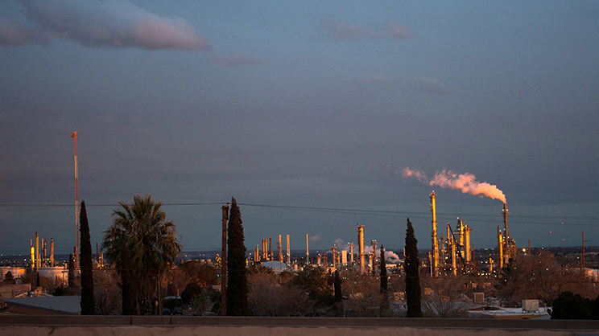
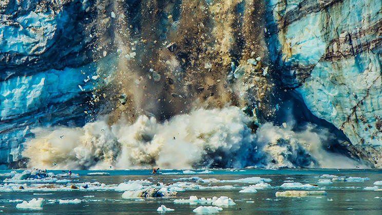
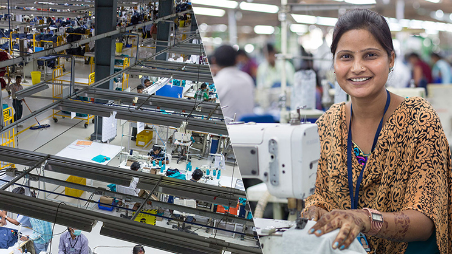
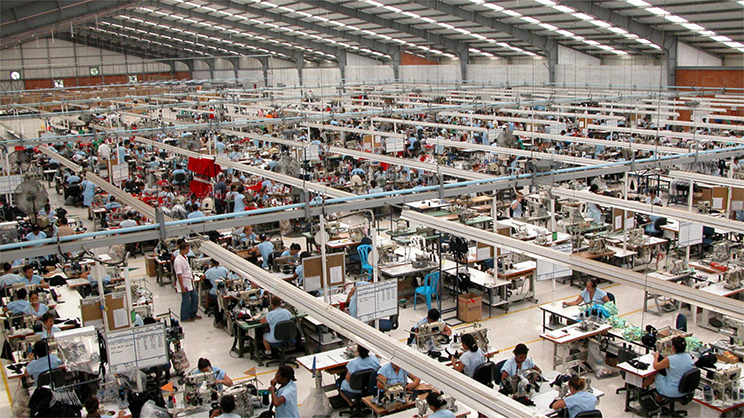
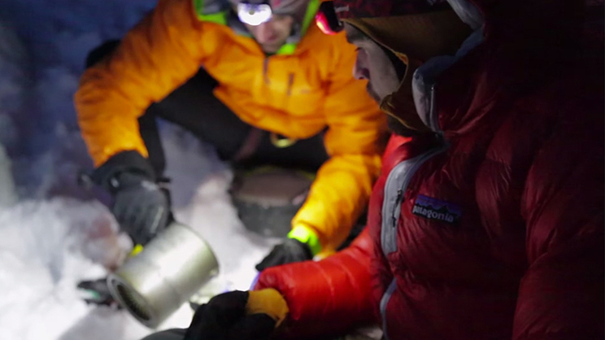

본문 콘텐츠영역
Mission
“우리는 우리의 터전,
지구를 되살리기 위해 사업을 합니다”
기후변화가 심각해지면서 이 ‘알피니즘’도 사라질 위기에 처했습니다. 이것이 바로 우리가 싸우는 이유이며, 우리의 시간과 노력, 그리고 매출의 1%를 전세계수백 곳의 풀뿌리 단체에 지원해 그들이 환경을 위해 싸울 수 있도록돕는 이유 입니다. 그렇다고 나무 한 그루를 살리기 위해 숲을 잃는 우를 범하지는 말아야 합니다 생물다양성, 경작 가능한 토 양, 산호초, 신선한 물을 점점 잃어가고 있는 지금, 우리는 지구 온난화의 다양한 현상 뿐 아니라 본질과원인에보다 집중하고 있습니다.
Snowhouse
올겨울, 파타고니아가 홍천 비발디파크에서 스노우하우스(Patagonia Snow House)를 오픈합니다.
스노우하우스에서는 파타고니아의 다양한 제품을 구매할 수 있고,렌탈 서비스를 통해 스키복을 미리 경험해 볼 수 있으며,수선이 필요한 옷을 무상 수선해 주는 원웨어 서비스도 받을 수 있습니다.
파타고니아는 새 옷을 사지 않고 입던 옷을 고쳐 입는 것이 환경운동의 시작이 될 수 있다고 믿습니다. 가령 수선을 통해 옷의 수명을 9개월 연장시키면, 생산공정에서 발생하는 탄소, 물, 기타 산업 폐기물을 최대 30%나 줄일 수 있습니다. 옷을 고쳐 입는 것은 정말 멋진 일입니다. 파타고니아 직영점의 원웨어 스테이션을 올겨울 스노우하우스에서도 만날 수 있습니다. 브랜드를 막론하고 어떤 의류 제품이든 무상으로 수선 서비스를 받을 수 있습니다.
"환경에 가장 이로운 옷은, 지금 당신이 입고 있는 바로 그 옷이다." 파타고니아 창업자, 이본 쉬나드
우리는 유행 때문에, 혹은 충동구매로 너무나 많은 옷을 쉽게 사고 버리며, 이는 감당하기 어려운 환경 피해로 이어지고 있습니다. 특히, 스키복과 같은 고가의 기능성 의류는 더더욱 먼저 입어보고 신중히 구매를 결정하는 것이 필요하겠죠? 파타고니아 스노우하우스에서 스키복을 대여해 드립니다. 충분히 입어 보고, 사용해 보고, 제품에 대한 모든 것을 경험해 본 다음에 구매를 결정해도 늦지 않습니다.
물론 스노우하우스에서는 파타고니아 제품 구매도 가능합니다. 그러나 구매는 고쳐 입고 빌려 입고 물려 입은 다음, 꼭 필요한 경우에 최후의 수단으로 신중하게 선택하는 것을 권해 드립니다. 새 옷을 살 때에는 최대한 오래 입을 수 있는 품질과 뛰어난 내구성, 유행에 크게 구애받지 않는 디자인을 선택하면 자연스럽게 옷 소비를 줄일 수 있게 됩니다.
New
Footprint
발자국 찾기(The Footprint Chronicles®)는 파타고니아의 기업 철학과 가치관을 드러냅니다. "발자국 찾기"는 생산 과정을 분명하게 관리해서, 제품이 사회와 환경에 미치는 영향 그리고 사업 규모를 줄여 나가도록 돕습니다. 파타고니아는 사업을 오래하려면 사회와 환경에 미치는 피해를 줄이거나 없애 나가야 한다고 믿습니다
최저 생활 임금과 최저 임금
파타고니아는 협력 공장들의 직원 임금에 대해 관심을 갖고 계속 확인하며, 파타고니아 옷을 만드는 노동자들이 자신들이 사는 지역에서 적어도 최저 임금 이상 받도록 하고 싶습니다. 하지만 우리는 대부분 지역에서 임금이 생활 수준을 충족하는지 알지 못합니다. 전 세계에서 모두 통용되는 생활 임금 계산법은 없습니다. 어떤 단체에서는 생활 임금을 4인 가족 기준에서 어른 한 명만 일을 할 때로 계산하고, 또 다른 단체에서는 5인 가족에서 어른 두 명이 일하는 것으로 계산합니다. 최저 생활 임금은 생활에 필요한 것 - 음식, 물, 집, 건강, 교육, 의복, 교통, 양육 -을 충족할 수 있는 수준의 임금을 말합니다. 여러 나라의 정부, 기업, 시민 단체들은 수 년 동안 불공정 임금, 적절한 노동 환경과 근로 시간, 최저 임금 인상, 전 세계에 걸쳐 일어나는 심각한 빈곤 문제 해결을 위한 단계적인 방법을 찾기 위해 협력하고 있습니다.
파타고니아가 지구에 미치는 영향
이 글은 파타고니아가 사업을 하면서 해 온 잘한 일과 못한 일을 정리한 내용의 일부입니다. 우리가 하는 일은 모두 지구에 영향을 미칩니다. 파타고니아 사명 선언은 “We’re in business to save our home planet (우리는 우리의 터전, 지구를 되살리기 위해 사업을 합니다)”입니다. 이 선언에 완성이란 없으며 계속 진행해 나가야 합니다. 우리는 제품 생산이 지구에 미치는 영향에 대해 알아야만 하고, 무엇을 하고 있는지 계속 질문해야 하며, 더 나은 방식으로 사업하기 위해 열심히 노력해야 합니다. 이와 같은 글을 통해 우리 고객이 정보를 잘 알고 지구를 지키는 일에 참여하기를 바랍니다.
우리의 사업과 기후 변화
파타고니아의 사명 선언은 “우리는 최고의 제품을 만들되, 불필요한 환경 피해를 유발시키지 않으며, 사업을 통하여 환경 위기에 대한 공감대를 형성하고 해결 방안을 실행한다” 입니다. 인간이 지구에 저지른 파괴 행위의 징후인 기후 변화는 사명 선언에서 언급한 환경 위기로서, 우리가 살아남기 위해서 반드시 극복해야만 합니다.
공정 무역 봉제
우리가 해야 할 일은 파타고니아가 문제의 일부임을 인정하는데서 시작됩니다. 파타고니아는 제품을 만들 때 화석 연료에서 추출한 물질을 쓰고, 생산 공장에서는 물과 여러 가지 자원을 사용하며, 쓰레기를 만들고, 공기 중으로 탄소를 배출합니다. 제품을 상자와 비닐에 넣어 전 세계로 운송합니다. 사무실, 물류 시설, 매장에서는 재생 또는 재생이 불가능한 물질로 생산한 전기를 씁니다. 자동차를 운전하고 비행기를 탑니다. 우리는 개인으로서 다양한 종류의 물건들 – 아마도 필요한 것보다 많은 – 물건들을 소비합니다.
공정 무역은 노동자들의 생활 임금 보장을 돕습니다 파타고니아는 공정 무역 인증 제품 종류를 33가지에서 192가지로 늘렸습니다 파타고니아는 공정 무역 인증 제품 종류를 2015년 봄 33가지에서 가을 시즌 192가지로 늘렸습니다. 파타고니아공정 무역 제품의 봉제 작업은 안도에 있는 프라티바신텍스 공장에서 이루어집니다. 프라티바신텍스 공장은 파타고니아와공정 무역 관계를 맺은 첫 번째 공장입니다. 스리랑카와 캘리포니아 LA에도새로운 공정 무역 공장 4곳과 협력 관계를 맺었습니다.
책임 기업
책임 기업은 기업 활동에서 소비자, 직원, 지역 사회, 환경에 미치는 영향에 대해 책임을 지기 위해 노력합니다. 회사는 국제 노동과 인권 기준을 준수함으로서 책임을 지는 활동을 실천할 수 있습니다. 파타고니아는 제품을 만드는 과정이 안전하고, 공정하고, 인권을 존중하는 환경이 되도록 노력해 왔습니다. 우리가 어떻게 일해 왔는지, 지금은 어디에 와 있는지를 확인하실 수 있습니다.
100% 트레이서블 다운
파타고니아 다운 제품에는 2014년 가을부터 100% ‘유통 과정 추적 다운’(Traceable Down) 만을 사용합니다. 이것은 파타고니아 제품에 쓰이는 모든 다운에는 푸아그라를 위해 강제로 사료를 먹여 키운 거위나 살아있는 거위에서 얻은 다운이 절대 들어있지 않다는 것을 추적해서 확인할 수 있다는 것을 뜻합니다. ‘유통 과정 추적 다운’ 의 검증 기준은 의류 산업에서 거위와 오리의 행복을 지켜주 기 위한 가장 앞선 실천입니다. 파타고니아는 2007년부터 이 일을 해왔고, 실제로 이루어 낸 유일한 브랜드가 되었습니다.